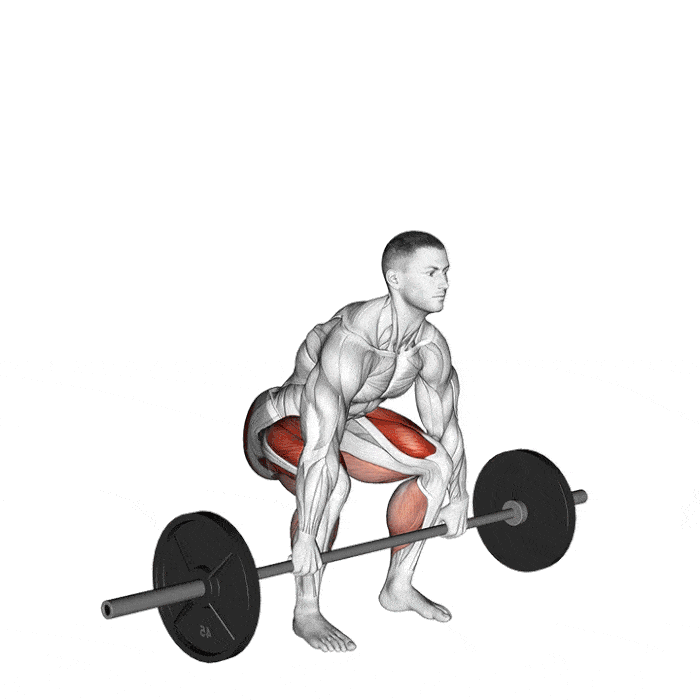

Deadlift je osnovna vaja za razvoj moči, ki vključuje dvigovanje uteži s tal do stoječega položaja. Pri tej vaji se glavne mišične skupine zadnja stegenska mišico, zadnjica, kvadriceps, spodnji in zgornji del hrbta.
Postavite se pred drog s stopali čim bližje drogu. Razporedite stopala v širini ramen. Stopala lahko kažejo naravnost naprej ali rahlo navzven. Pogrčite se, ohranite hrbet naravnost in prijemite drog z dvojnim oprijemom ali eno roko nad in eno pod v širini ramen. Potegnite lopatice navzdol. Napnite jedro in z nogami pritisnite težo skozi stopala, ko dvignete drog. Med dvigovanjem droga se bodo vaše boke in ramena dvignili skupaj, hrbet pa naj bo ravno. Spustite drog nazaj na tla, tako da drog ostane čim bližje nogam.
Trajanje: minut
Kalorije: kcal
Vrsta:
Težavnost:
Kratek opis: